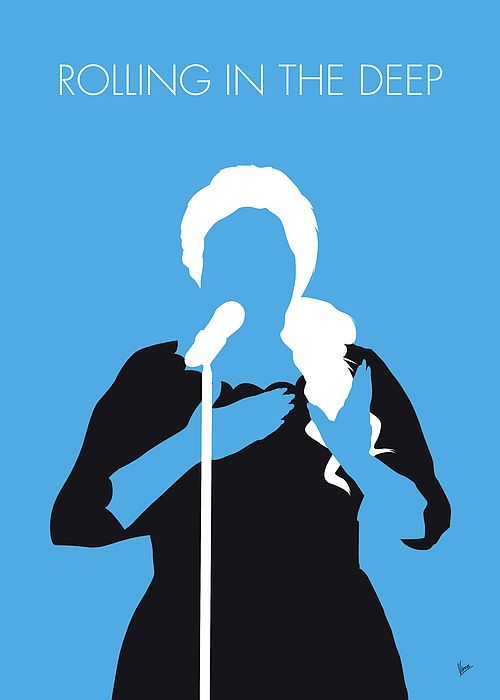

Musica
Adele

Adele Laurie Blue Adkins (Londres, Inglaterra, 5 de mayo de 1988), conocida simplemente como Adele, es una cantante, compositora y multinstrumentista británica.10
Desde muy joven mostró su interés por la música y en 2006 egresó de la BRIT School de Artes Escénicas y Tecnología, año en el que firmó un contrato con XL Recordings, tras ser descubierta por unos demos que un amigo publicó en MySpace.11 En los Premios Brit de 2007 recibió el galardón elección de los críticos y también ganó la encuesta Sound of 2008 realizada por la BBC.12 En 2008 Adele lanzó su álbum de estudio debut, 19 que se situó en la posición 1 de la lista de álbumes británica y ha sido certificado doble platino en Estados Unidos.1314 Su carrera se vio favorecida en el territorio estadounidense tras una actuación en el programa Saturday Night Live a mediados de octubre de 2008, el espectáculo contó con la mayor cantidad de espectadores en catorce años.12 Un año después, en la 51.ª entrega de los Premios Grammy ganó los galardones mejor artista nuevo y mejor interpretación vocal pop femenina por «Chasing Pavements».15
A principios de 2011 Adele lanzó su segundo álbum de estudio, 21, y fue éxito comercial en todo el mundo llegando a vender más de treinta millones de copias.16 Por sus ventas ha sido certificado dieciséis veces platino en Reino Unido y en el territorio estadounidense se le concedió la certificación de diamante por la Asociación de Industria Discográfica de Estados Unidos (RIAA).13 El álbum también contó con críticas favorables y recibió numerosos premios a lo largo de 2011 y 2012, entre los que incluyen un récord de seis grammys,17 dos galardones en los Brit y tres American Music Awards, respectivamente. Adele ha vendido más de cuarenta millones de álbumes y cincuenta millones de sencillos en todo el mundo.18
Debido al éxito de 21, cuenta con varias menciones en el Guinness World Records,19 a su vez fue condecorada como un Miembro de la Excelentísima Orden del Imperio Británico por el príncipe Carlos.20 Adele es la primera mujer en la historia que sitúa tres sencillos entre las primeras diez posiciones de la lista musical Billboard Hot 100 simultáneamente, y la primera fémina en tener dos álbumes y dos sencillos entre los primeros cinco puestos de la lista Billboard 200 y Billboard Hot 100 al mismo tiempo. Además 21 pasó a ser el álbum con más entradas al primer puesto de la lista musical de Reino Unido y Estados Unidos. En 2013, recibió un Óscar y un globo de oro a la mejor canción original por el tema «Skyfall», compuesto para la vigésimo tercera película de James Bond del mismo nombre, en los 56 entrega de los Premios Grammy del 2014 recibió el Grammy en la categoría de Mejor canción escrita para un medio visual siempre por Skyfall.21 Después de haberse tomado un descanso de tres años, Adele lanzó su tercer álbum de estudio 25, en noviembre de 2015, que debutó en el puesto número uno en la mayoría de los mercados principales. En la primera semana rompió récords de ventas en varios países, incluyendo Reino Unido y Estados Unidos. El disco fue antecedido por la publicación de «Hello».
En 2011 y 2012, Billboard la nombró artista del año.22 VH1 la incluyó en el quinto puesto de las 100 mujeres más grandes de la música,23 y la revista Time la calificó como una de las personas más influyentes en el mundo.24 El 18 de diciembre de 2015, se estimó que Adele vendió de más de 100 millones de sencillos y discos, haciendo de ella una de las artistas musicales con mayores ventas en el mundo.25